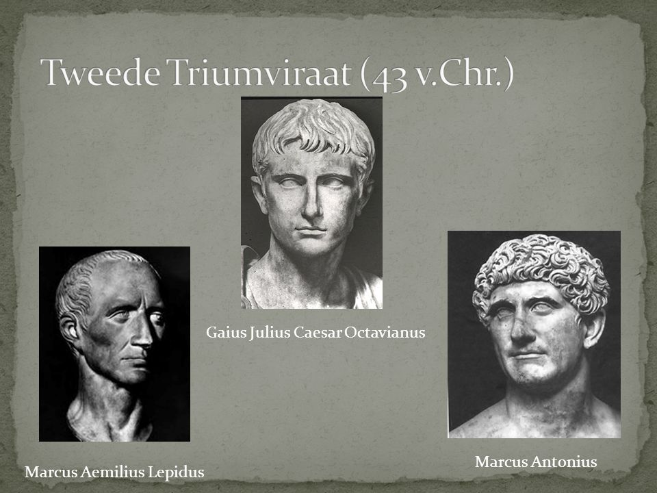
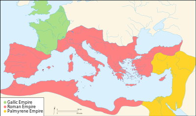

Het Romeinse Rijk had veel gebied veroverd, maar niet altijd bleven deze gebieden loyaal aan Rome.
In dit hoofdstuk behandelen we belangrijke verdelingen die de toekomst van Rome hebben veranderd.
Na de moord op Julius Ceasar was er veel onrust in het Romeinse Rijk.
In deze chaos hebben Marcus Antonius, Octavianus en lepidus een coalitie gevormd.
Dit werd het Tweede Triumviraat genoemd, met als doel de moordernaars van Ceasar opsporen.
Dit lukte hun ook, maar ze kwamen er niet uit wie het Romeinse Rijk mocht besturen.

Uiteindelijk werd het Romeinse Rijk in drie delen gesplitst.
Marcus Antionius regeerde over het huidige midden oosten en egypte.
Lepidus had de macht in de rest van Noord Afrika en Iberia(spane en portugal).
Octavionus kreeg de macht in de rest van Europa.
Hoewel Marcus Antionius eerder als opvolger van Ceasar werd gezien, wilde Ceasar toch dat Octavianus hem opvolgde.
Nadat Octavianus het gebied van Lepidus had verkregen, ontstond er een grote burgeroorlog tussen hem en Antonius.
Marcus Antionius was echter verliefd geworden op de egyptische faroa, Cleopatra, en deed alles om haar aandacht te krijgen.
In de laatste en beslissende slag van de burger oorlog trok Cleopatra haar troepen weg, en Marcus Antionius volge haar snel.
Antonius gaf de schuld aan Cleopatra dat hij verloren had en cleopatra sloot haarzelf op in haar Tombe.
Toen een boodschapper tegen Antionius had verteld dat zij gestorven was, geloofde hij het en pleegde zelf ook zelfmoord.
Cleopatra bleek echter nog te leven, maar had later gif ingenomen om niet gevangen te worden genomen.
Toen Octavianus had gewonnen trok hij het midden oosten in, waar hij de zoon van Ceasar en Cleopatra vond.
Omdat deze de eingelijke echte opvolger was, liet Octavianus hem vermoorden.
Na zijn terugkeer in Rome werd hij uitgeroepen tot Keizer en kreeg de naam Augustus.
Na de dood van de huidie keizer Severus Alexander door zijn eigen troepen, ontstond er veel chaos in het Romeinse Rijk.
In deze periode werden twee gebieden onafhankelijk.
Het Gallische Rijk en het Palmyrene Rijk.
Het Gallische Rijk had vooral controle over Gallië en Germanië en het Palmyrene Rijk in Syrië, Anatolia palastina en Egypte

Nadat er weer een keizer stierf, kwam Aurelian aan de macht. Hij zorgde ervoor dat het Romeinse Rijk veer werd verenigd.
Als eerste veroverde hij de bezette gebieden van het Gallische rijk.
Pas een paar jaar later begon hij met het terugveroveren van het Palmyrene Rijk.
Tijden het Crisis Jaar vna de Derde eeuw kwam er bijna een volledig eind aan het Romeinse Rijk.